SIENA, NIPS-CERN, UFJF
Redes neurais, do neurônio ao fractal
Aula 8: os dados do CERN, múons e massa invariante
04/12/2026. C∴ Chrysthofer A. A. Afonso
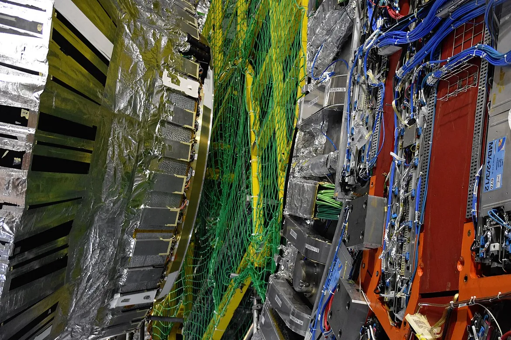
O CMS aberto, no LHC, em 2019. Foto de Simon Waldherr, Wikimedia Commons, CC BY 4.0.
Limiar, aula 8: os dados do CERN
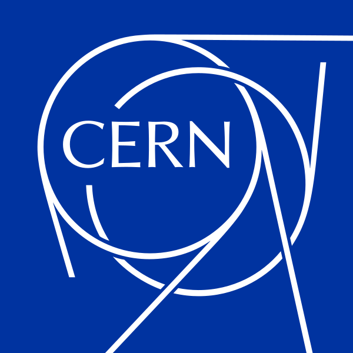
1 · Revisão
1
2
3
4
Limiar, aula 8: os dados do CERN
1 · Revisão
1
O neurônio e o perceptron
um neurônio desenha uma reta, e nenhuma reta separa o XOR
25/09, presencial
2
Derivada e gradiente
o passo contra a derivada; a taxa grande demais faz o treino divergir
02/10, presencial
3
Matrizes e camadas
duas camadas separam o XOR, com pesos escolhidos à mão
13/11, on-line
4
O Jacobiano
a regra da cadeia com vetores, uma camada de cada vez
13/11, on-line
5
Retropropagação
a regra da cadeia, de trás para a frente, acha os pesos do XOR
13/11, on-line
6
O MNIST em NumPy
um MLP em 70 mil dígitos escritos à mão, com treino, validação e teste
27/11, on-line
7
PyTorch
a biblioteca faz a retropropagação; o erro final contra a taxa
27/11, on-line
8
Os dados do CERN
um MLP estima a massa dos dois múons, conferida pela fórmula
04/12, on-line
9
O fractal e o projeto
a fronteira entre a taxa que converge e a que diverge
04/12, on-line
10
A apresentação
a apresentação do projeto e a revisão do curso inteiro
11/12, on-line
Limiar, aula 8: os dados do CERN
2 · O LHC, o CMS e o múon
27 km
a circunferência do LHC, até 175 m abaixo da fronteira entre a França e a Suíça
14 mil t
o CMS, um dos dois detectores de uso geral do LHC: 21 m de comprimento, 15 m de diâmetro
7 TeV
a energia das colisões de prótons de 2010, o ano dos 100 mil eventos desta aula
Acelerador, no curso: a máquina que dá energia às partículas e as faz colidir. Detector: o instrumento que registra o que sai da colisão.
Limiar, aula 8: os dados do CERN
2 · O LHC, o CMS e o múon
105,66 MeV
a massa do múon
≈ 207 ×
a massa do elétron
−1
a carga, igual à do elétron; +1 no antimúon
eV, elétron-volt: a energia de um elétron numa diferença de potencial de 1 volt. MeV, um milhão de eV; GeV, um bilhão; TeV, um trilhão.
Limiar, aula 8: os dados do CERN
3 · Os dados e a massa invariante
coluna
o que é
Type
T, tracker muon; G, global muon
Run, Event
a corrida e o número do evento
E
a energia, em GeV
px, py, pz
as componentes do momento, em GeV
pt
o momento transversal, perpendicular ao feixe
eta
a pseudorrapidez, que mede o ângulo com o feixe
phi
o ângulo em volta do feixe, em radianos
Q
a carga
M
a massa invariante dos dois múons, em GeV
100.000
eventos, de 2 a 110 GeV
E, px, py, pz, pt, eta, phi e Q para cada múon, 1 e 2. Descrição do registro 303 do portal de dados abertos do CERN, CC0.
Limiar, aula 8: os dados do CERN
3 · Os dados e a massa invariante
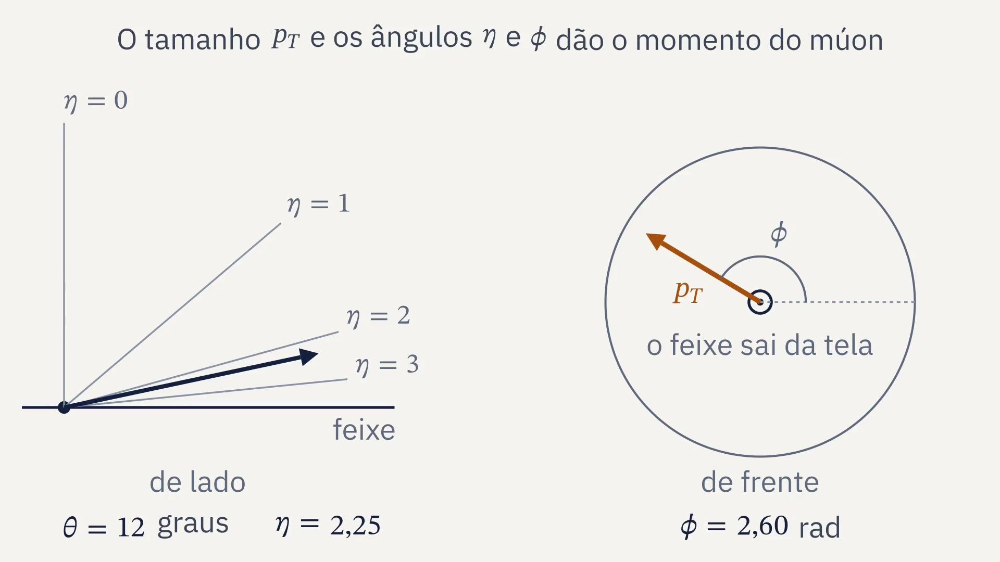
Limiar, aula 8: os dados do CERN
3 · Os dados e a massa invariante
senh, o seno hiperbólico: (eˣ − e⁻ˣ)/2
O múon 1 do evento 3
pela conta
no arquivo
px
−0,2488
−0,24877
py
4,0834
4,08338
pz
6,5251
6,52511
Com a massa do múon, 0,10566 GeV, a fórmula da massa bate com a coluna M nos 100 mil eventos.
Limiar, aula 8: os dados do CERN
3 · Os dados e a massa invariante
|p|, o módulo: o tamanho do vetor momento
Energia, momento e massa em GeV, com a velocidade da luz igual a 1.
Massa invariante: a massa da partícula que se desfez nos dois múons. Não depende de quem mede.
Limiar, aula 8: os dados do CERN
3 · Os dados e a massa invariante
E
px
py
pz
múon 1
7,70222
−0,24877
4,08338
6,52511
múon 2
6,90202
−3,02439
3,75129
4,94041
soma
14,60424
−3,27316
7,83467
11,46552
Energia e momento em GeV. O momento se soma componente a componente.
A coluna M diz 3,11929. A massa sai da diferença de dois números grandes.
Limiar, aula 8: os dados do CERN
3 · Os dados e a massa invariante
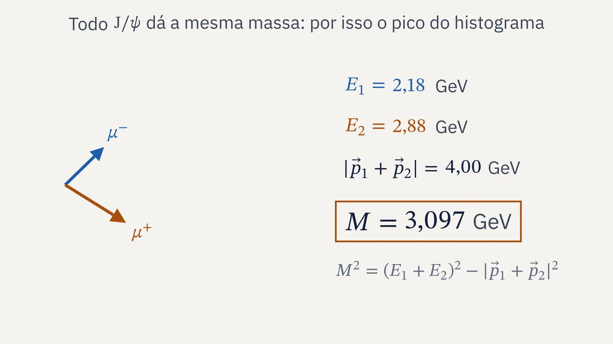
Limiar, aula 8: os dados do CERN
3 · Os dados e a massa invariante
99,6%
dos eventos: a fórmula, com E e p do arquivo, bate com a coluna M
413
eventos em que a energia de um múon não combina com o momento
100%
com pt, eta e phi, a fórmula bate em todos
Num dos 413, um múon tem 184 mil GeV: 26 vezes os 7 mil GeV da colisão inteira.
Bater, aqui: diferença relativa menor que 0,1%. Dado real se confere antes de usar.
Limiar, aula 8: os dados do CERN
3 · Os dados e a massa invariante
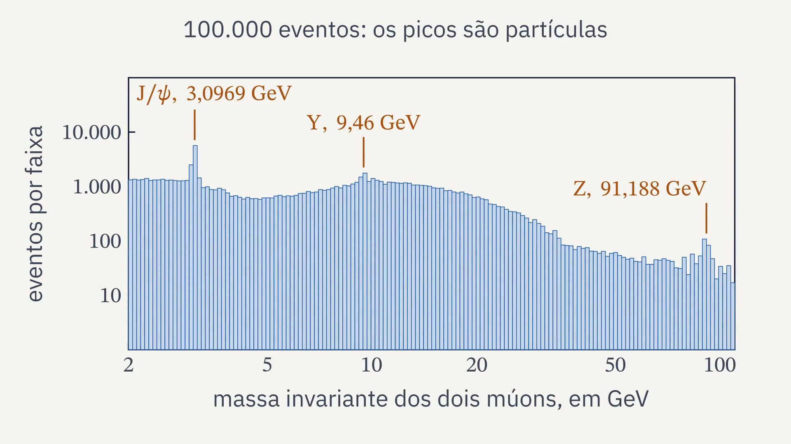
Limiar, aula 8: os dados do CERN
3 · Os dados e a massa invariante
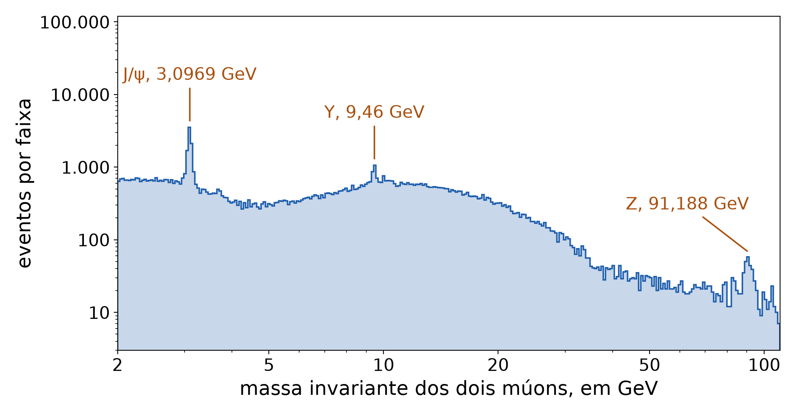
Sobre o fundo liso, três picos: o J/ψ, o Υ e o Z, cada um uma partícula que se desfez em dois múons.
Limiar, aula 8: os dados do CERN
3 · Os dados e a massa invariante
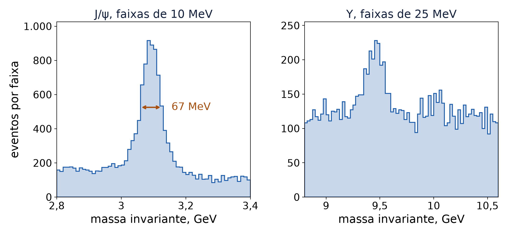
O pico do J/ψ tem 67 MeV à meia altura. O J/ψ em si tem 93 keV: o resto é o erro de medida do detector.
Limiar, aula 8: os dados do CERN
4 · De onde vem
J/ψ
3,0969 GeV
vive cerca de
Υ
9,46 GeV
vive cerca de
Z
91,188 GeV
vive cerca de
Méson: um quark e um antiquark. Nenhuma das três chega ao detector: o CMS vê os múons, e a massa invariante mostra a partícula.
Limiar, aula 8: os dados do CERN
4 · De onde vem
1974
O J/ψ, descoberto ao mesmo tempo no SLAC, por Burton Richter, e em Brookhaven, por Samuel Ting.
1977
O Υ, pelo experimento E288 de Leon Lederman, no Fermilab, em pares de múons.
1983
O Z, no CERN, pelos experimentos UA1 e UA2, no colisor SPS.
Fontes: Wikipedia, verbetes “J/psi meson”, “Upsilon meson” e “W and Z bosons”.
Limiar, aula 8: os dados do CERN
5 · Uma rede aprende a fórmula?
Oito números entram, a energia e o momento de cada múon. Sai a massa. A rede não conhece a fórmula.
Limiar, aula 8: os dados do CERN
5 · Uma rede aprende a fórmula?
asinh, o arco seno hiperbólico: comprime os números grandes como um logaritmo, sem perder o sinal
O treino
A compressão, em 30 épocas
10,6% → 3,4%
o erro mediano na validação, sem e com o asinh
Limiar, aula 8: os dados do CERN
5 · Uma rede aprende a fórmula?
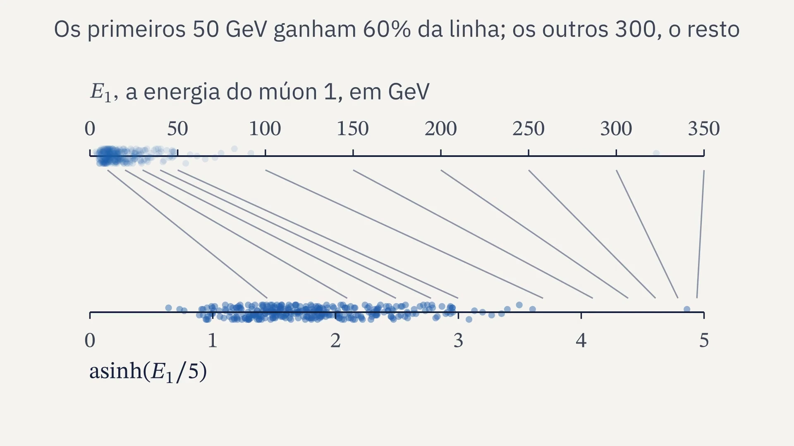
Limiar, aula 8: os dados do CERN
5 · Uma rede aprende a fórmula?
≈, aproximadamente igual
μ e σ, a média e o desvio padrão, só do treino
Padronizar
Por que ln M
Limiar, aula 8: os dados do CERN
5 · Uma rede aprende a fórmula?
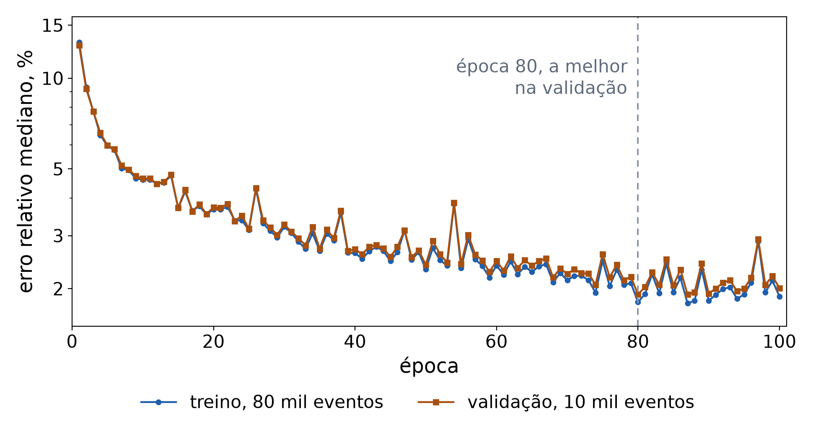
Treino e validação descem juntos: a rede não decora. A melhor época pela validação é a 80, com 1,91%.
Limiar, aula 8: os dados do CERN
5 · Uma rede aprende a fórmula?
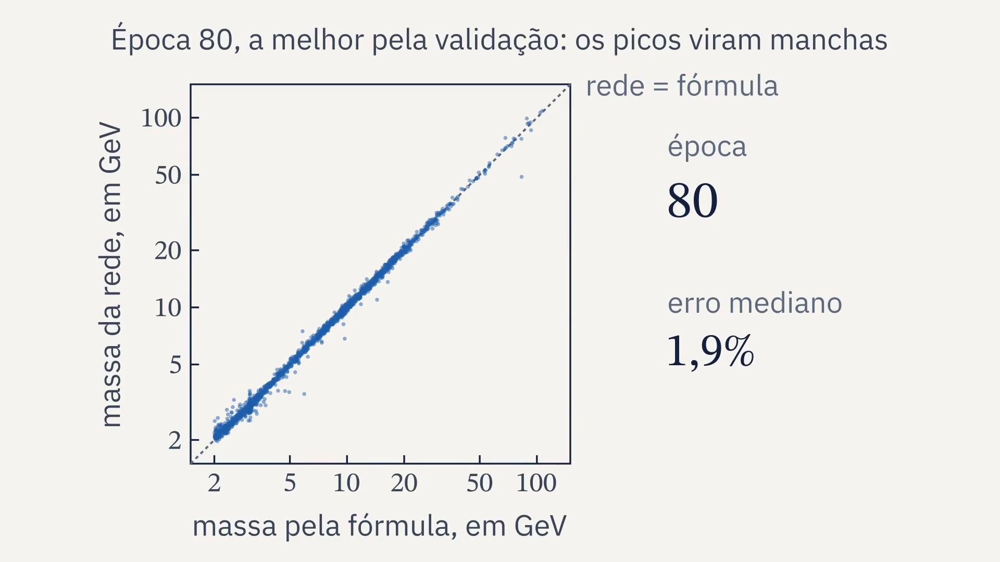
Limiar, aula 8: os dados do CERN
5 · Uma rede aprende a fórmula?
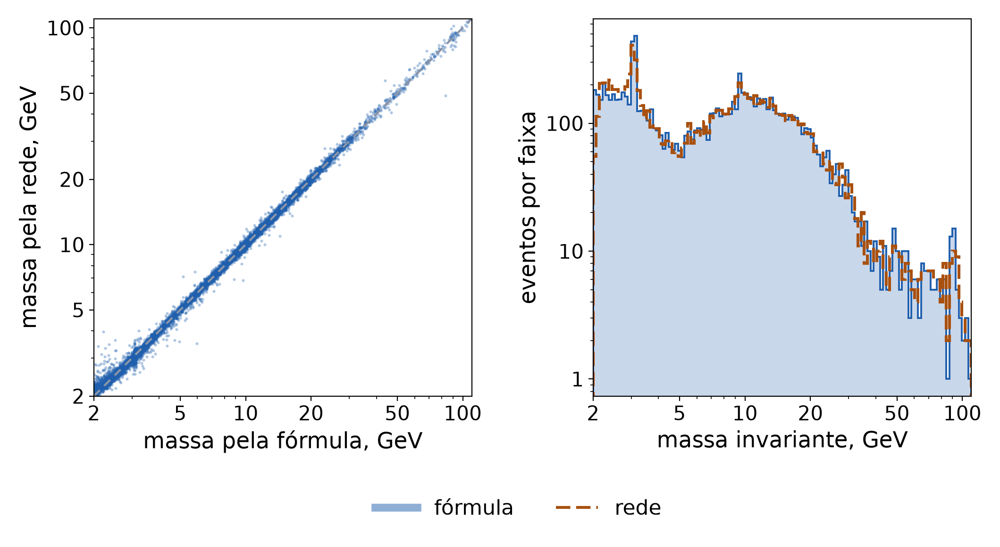
No teste: erro relativo mediano de 1,88%, e 90% dos eventos abaixo de 5,26%. A fórmula erra em milionésimos.
Limiar, aula 8: os dados do CERN
5 · Uma rede aprende a fórmula?
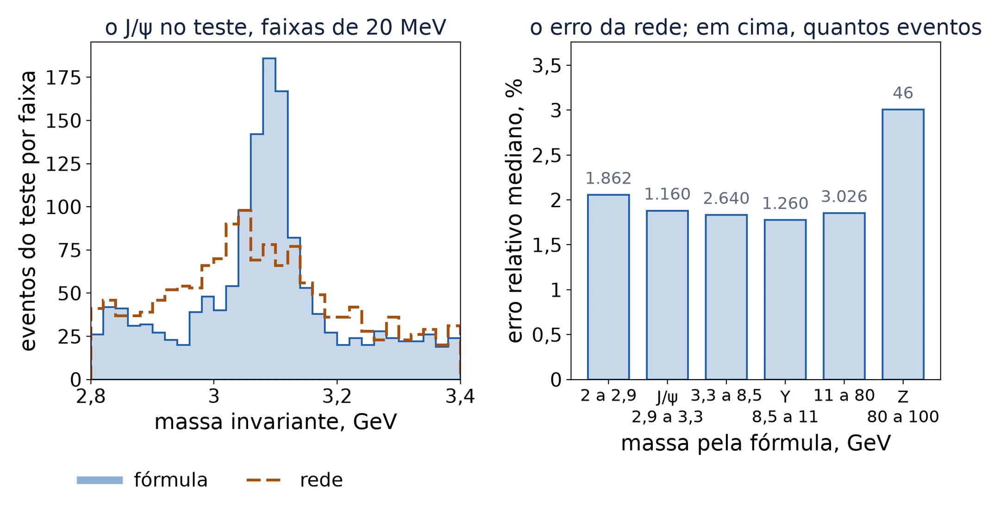
A rede borra o pico do J/ψ e erra mais no Z, onde há poucos exemplos: 364 no treino.
Limiar, aula 8: os dados do CERN
6 · O código
1
dimuon.py lê o arquivo e calcula a fórmula pelos dois caminhos
2
O histograma, com faixas iguais em escala logarítmica
3
mlp_massa.py comprime as entradas e treina a rede
4
A melhor época pela validação, e o teste uma vez
5
Os números em resultados/massa.json, para as figuras
O NumPy que resolve
np.sqrt((E1 + E2)**2
- (px1 + px2)**2
- (py1 + py2)**2
- (pz1 + pz2)**2)
np.histogram(M, bins=bordas)
np.arcsinh(X / 5)
Limiar, aula 8: os dados do CERN
6 · O código
mlp_massa.py, o laço do treino
modelo = rede()
opt = torch.optim.Adam(modelo.parameters(), lr=1e-3)
perda_fn = torch.nn.MSELoss()
for epoca in range(1, 101):
ordem = tre[rng.permutation(len(tre))]
for k in range(0, len(ordem), 256):
i = torch.from_numpy(ordem[k:k + 256])
opt.zero_grad()
perda = perda_fn(modelo(Xp[i]), yp[i])
perda.backward()
opt.step()
1
zero_grad() zera as derivadas do lote anterior
2
A passada para a frente e a perda, o erro quadrático em ln M
3
backward(): a retropropagação da aula 5, sozinha
4
step(): o passo do Adam em cada peso
Limiar, aula 8: os dados do CERN
6 · O código
O histograma
A rede
Entrega
Extra, opcional: outras entradas, como pt, eta e phi, ou um erro menor no Z.
Limiar, aula 8: os dados do CERN
7 · Fechamento
Limiar, aula 8: os dados do CERN
The video on this slide did not load. Open the file